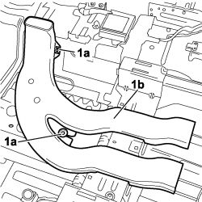

5010B47 SIDE AIR DUCT TO REAR SEATS (ONE), LH OR RH - R.R.
- Path
- Procedures > 50 AUXILIARY UNITS > 5010 CLIMATE CONTROL - MISCELLANEOUS > 5010B CLIMATE CONTROL AIR PIPES AND DUCTS > 5010B47 SIDE AIR DUCT TO REAR SEATS (ONE), LH OR RH - R.R.
- Kind
- repair procedure (removal / refitting; the operation number is the code)
- Applies to
- all engines; all production periods
- Interactive page
- https://sloeber94.github.io/elrnDB-fCrm/en/#/194000580
Applies to: all engines; all production periods
 Removing
Removing
 Refitting
Refitting- Turn the ignition key to the OFF position and extract it;
- Disconnect the battery leads and insulate them. Wait for 10 minutes before continuing.
Description | Connector | |
|---|---|---|
BATTERY |
Op. 7040A24 LOWER FACIA COVER TRIM - R+R
Op. 7040A26 STEERING COLUMN TRIM - R+R
Op. 7040A44 LEFT DASHBOARD SIDE TRIM - R.R.
Op. 5010C57 LEFT LOWER AIR DIFFUSER - R R
Op. 5580C23 DRIVE SIDE KNEE PROTECTION AIR BAG MODULE R. R.
Op. 7040A30 LEFT LOWER DASHBOARD TRIM - R.R.
Op. 7040A45 RIGHT DASHBOARD SIDE TRIM - R.R.
Op. 5010C55 RIGHT LOWER AIR DIFFUSER - R+R
Op. 5570T85 CD/AUDIO PLAYER LOADER - R R
Op. 7040A31 DASHBOARD COMPARTMENT ASSEMBLY - R.R.
Op. 7040L39 LEFT FRONT DOOR COMPARTMENT SILL PLATE R R
Op. 7040L41 RIGHT FRONT DOOR COMPARTMENT SILL PLATE RR
(Both)
Op. 7045A10 FRONT SEAT (ONE), LEFT OR RIGHT - R.R.
(Both)
Op. 7040A65 CONSOLE SIDE CLOSING (ONE) - R.R.
Op. 5010C32 AIR VENT ON TUNNEL COVER FOR REAR SEATS - R.R.
Op. 7040L28 TUNNEL SWITCH PANEL - R R
Op. 5520A10 IGNITION SWITCH ASSEMBLY - R+R
Op. 7040L20 TUNNEL COVER - R.R
Op. 7040A95 REINFORCEMENT BRACKET ONE LH OR RH BETWEEN FACIA SUPPORT BEAM AND BODY R R
Op. 7040L17 PASSENGER COMPARTMENT FLOOR FRONT CARPET - R.R.
1. Using the special tool, release the two retaining buttons (1a) for the side air duct (1b) and remove it from the vehicle.
Tool | Description | Function | Validity |
|---|---|---|---|
1878077000 | Knife | Retainer removal |

Applies to: all engines; all production periods
Refitting
Removing- Check that the air duct is not damaged.
- Fit the air duct in position and secure it using the two retaining buttons.
Op. 7040L17 PASSENGER COMPARTMENT FLOOR FRONT CARPET - R.R.
Op. 7040A95 REINFORCEMENT BRACKET ONE LH OR RH BETWEEN FACIA SUPPORT BEAM AND BODY R R
Op. 7040L20 TUNNEL COVER - R.R
Op. 5520A10 IGNITION SWITCH ASSEMBLY - R+R
Op. 7040L28 TUNNEL SWITCH PANEL - R R
Op. 5010C32 AIR VENT ON TUNNEL COVER FOR REAR SEATS - R.R.
(Both)
Op. 7040A65 CONSOLE SIDE CLOSING (ONE) - R.R.
(Both)
Op. 7045A10 FRONT SEAT (ONE), LEFT OR RIGHT - R.R.
Op. 7040L41 RIGHT FRONT DOOR COMPARTMENT SILL PLATE RR
Op. 7040L39 LEFT FRONT DOOR COMPARTMENT SILL PLATE R R
Op. 7040A31 DASHBOARD COMPARTMENT ASSEMBLY - R.R.
Op. 5570T85 CD/AUDIO PLAYER LOADER - R R
Op. 5010C55 RIGHT LOWER AIR DIFFUSER - R+R
Op. 7040A45 RIGHT DASHBOARD SIDE TRIM - R.R.
Op. 7040A30 LEFT LOWER DASHBOARD TRIM - R.R.
Op. 5580C23 DRIVE SIDE KNEE PROTECTION AIR BAG MODULE R. R.
Op. 5010C57 LEFT LOWER AIR DIFFUSER - R R
Op. 7040A44 LEFT DASHBOARD SIDE TRIM - R.R.
Op. 7040A26 STEERING COLUMN TRIM - R+R
Op. 7040A24 LOWER FACIA COVER TRIM - R+R
- Reconnect the negative and positive battery terminals.
Description | Connector | |
|---|---|---|
BATTERY |
Topics linked from this page (23)
- 5010B58 <x>DUCT BETWEEN CLIMATE CONTROL UNIT HOUSING AND AIR DUCT TO REAR SEATS (ONE), LH OR RH - R&R</x>
- 5010C32 AIR VENT ON TUNNEL COVER FOR REAR SEATS - R.R.
- 5010C55 RIGHT LOWER AIR DIFFUSER - R+R
- 5010C57 LEFT LOWER AIR DIFFUSER - R R
- 5520A10 IGNITION SWITCH ASSEMBLY - R+R
- 5570T85 CD/AUDIO PLAYER LOADER - R R
- 5580C AIR BAG SYSTEM
- 5580C23 DRIVE SIDE KNEE PROTECTION AIR BAG MODULE R. R.
- 7040A24 LOWER FACIA COVER TRIM - R+R
- 7040A26 STEERING COLUMN TRIM - R+R
- 7040A30 LEFT LOWER DASHBOARD TRIM - R.R.
- 7040A31 DASHBOARD COMPARTMENT ASSEMBLY - R.R.
- 7040A44 LEFT DASHBOARD SIDE TRIM - R.R.
- 7040A45 RIGHT DASHBOARD SIDE TRIM - R.R.
- 7040A65 CONSOLE SIDE CLOSING (ONE) - R.R.
- 7040A95 REINFORCEMENT BRACKET ONE LH OR RH BETWEEN FACIA SUPPORT BEAM AND BODY R R
- 7040L17 PASSENGER COMPARTMENT FLOOR FRONT CARPET - R.R.
- 7040L20 TUNNEL COVER - R.R
- 7040L28 TUNNEL SWITCH PANEL - R R
- 7040L39 LEFT FRONT DOOR COMPARTMENT SILL PLATE R R
- 7040L41 RIGHT FRONT DOOR COMPARTMENT SILL PLATE RR
- 7045A10 FRONT SEAT (ONE), LEFT OR RIGHT - R.R.
- A001 BATTERY